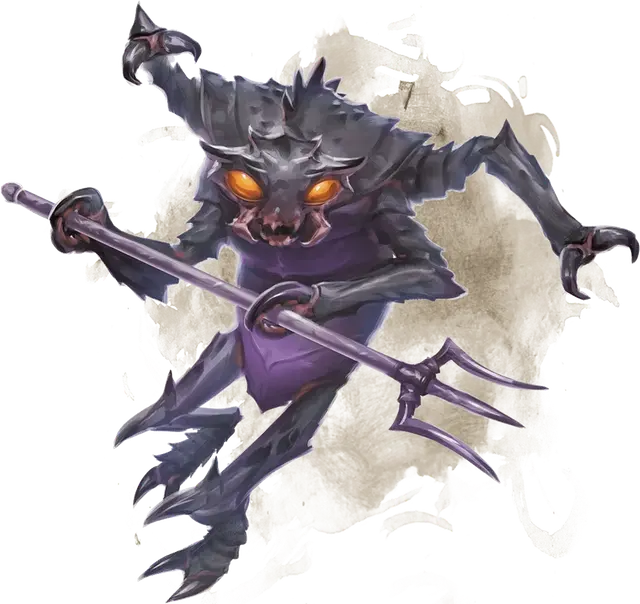

Меззолот
Mezzoloth
Среднее Исчадие (Юголот), нейтрально-злое

Класс Доспеха 18 (природный доспех)
Хиты 75 (10к8 + 30)
Скорость 40 футов
| мод | спас | ||
|---|---|---|---|
| СИЛ | 18 | +4 | +4 |
| ЛОВ | 11 | +0 | +0 |
| ТЕЛ | 16 | +3 | +3 |
| мод | спас | ||
|---|---|---|---|
| ИНТ | 7 | −2 | −2 |
| МДР | 10 | +0 | +0 |
| ХАР | 11 | +0 | +0 |
Навыки Восприятие +3
Сопротивление урону огонь, холод, электричество; дробящий, колющий, рубящий от немагических атак
Иммунитет к урону кислота, яд
Иммунитет к состояниям отравление
Чувства слепое зрение 60 футов, тёмное зрение 60 футов, пассивное Восприятие 13
Языки Бездны, Инфернальный, Телепатия 60 фт.
Опасность 5 (1800 опыта)
Бонус мастерства +3
Особенности
Врождённое колдовство. Базовой характеристикой меззолота является Харизма (Сл спасброска от заклинания 11). Он может накладывать следующие заклинания, не нуждаясь в материальных компонентах:
• 2/день каждое: рассеивание магии [dispel magic], тьма [darkness];
• 1/день: облако смерти [cloudkill];
Сопротивление магии. Меззолот совершает с преимуществом спасброски от заклинаний и прочих магических эффектов.
Магическое оружие. Атаки оружием меззолота являются магическими.
Вариант: призыв юголотов. У некоторых юголотов может быть действие, позволяющее им призывать других юголотов.
Призыв юголота (1/день). Юголот выбирает, кого призвать, и пытается это сделать. Меззолот получает 30% шанс призыва одного меззолота [mezzoloth].
Призванный юголот появляется в свободном пространстве в пределах 60 футов от призывателя, действует самостоятельно (кроме случая, когда призывающим был ультролот, так как в этом случае призванный юголот действует как его союзник), и не имеет способности призывать других юголотов. Призванный юголот существует в течение 1 минуты, или пока призыватель не умрёт или бонусным действием его не отпустит.
Действия
Мультиатака. Меззолот совершает две атаки: одну когтями, и одну трезубцем.
Когти. Рукопашная атака оружием: +7 к попаданию, досягаемость 5 футов, одна цель. Попадание: Рубящий урон 9 (2к4 + 4).
Трезубец. Рукопашная или дальнобойная атака оружием: +7 к попаданию, досягаемость 5 футов или дистанция 20/60 футов, одна цель. Попадание: Колющий урон 7 (1к6 + 4), или колющий урон 8 (1к8 + 4), если используется двумя руками для совершения рукопашной атаки.
Телепортация. Меззолот магическим образом телепортируется вместе со всем несомым и носимым снаряжением, на расстояние до 60 футов в свободное пространство, которое он видит.
Описание
Значительная часть популяции юголотов состоит из меззолотов, насекомоподобных существ размером с человека, покрытых хитиновыми пластинами. Меззолоты — пехотинцы армий юголотов; их широко посаженные глаза сияют красным светом, когда они бросаются на врагов.
Меззолотом движет жажда награды и насилия, и если могущественное существо предложит хотя бы что-то одно из двух, меззолота можно будет привлечь на службу. Хотя на всех четырех руках у него смертоносные когти, обычно в двух из них меззолот держит трезубец. Если его окружат враги, меззолот может выдохнуть токсические пары, которые вызывают удушье и могут убить целую группу существ.
См. дополнительно статью: "Бестиарий: Юголоты"